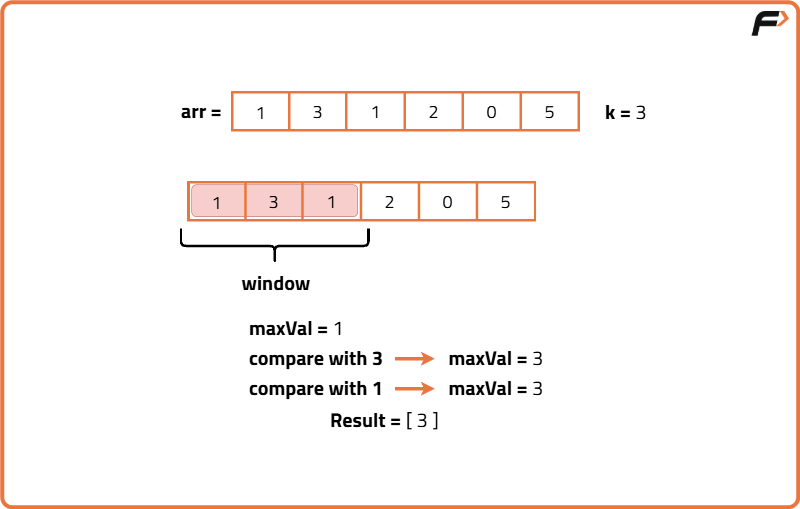
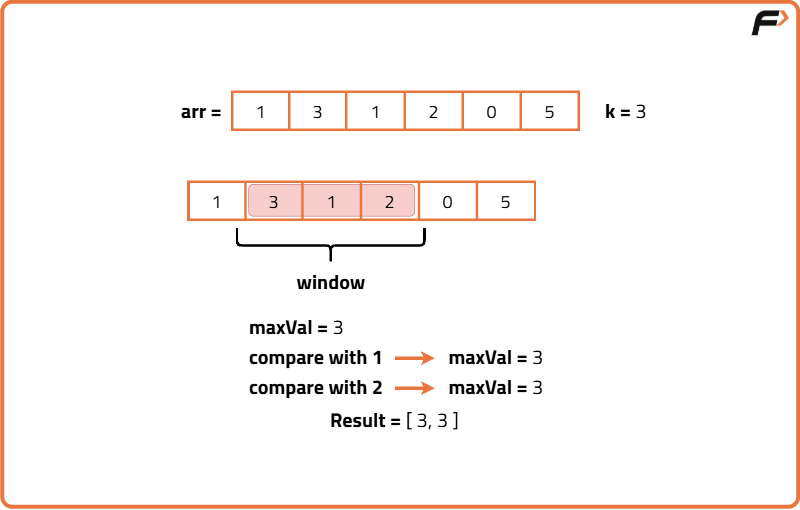
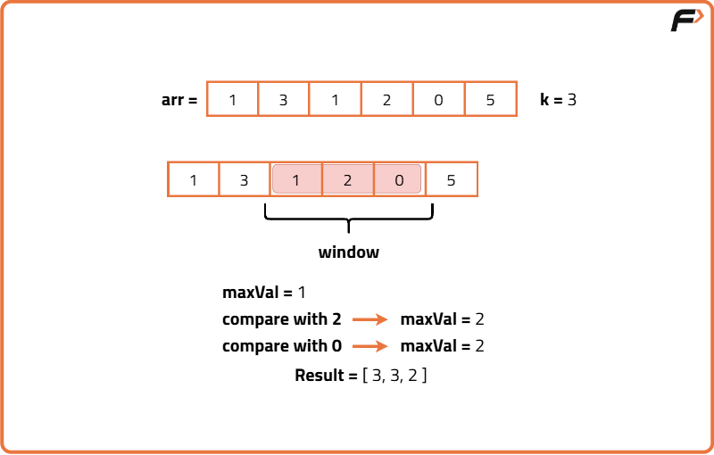
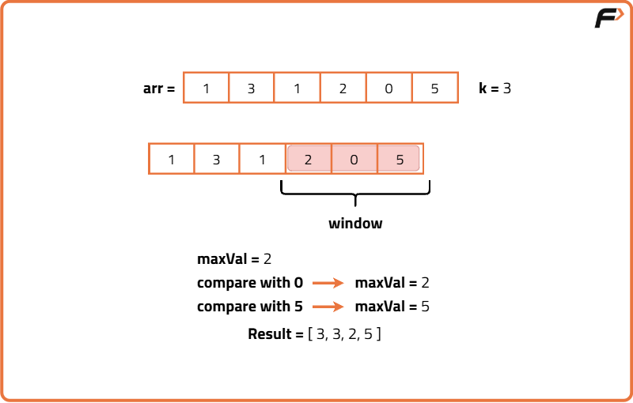
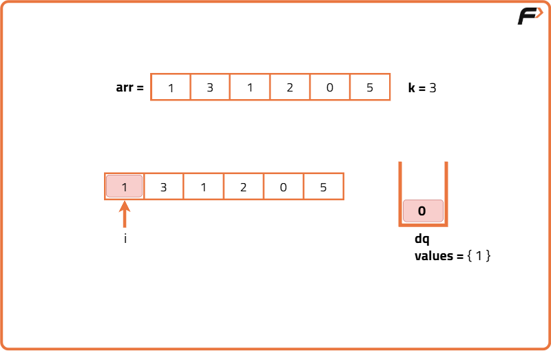
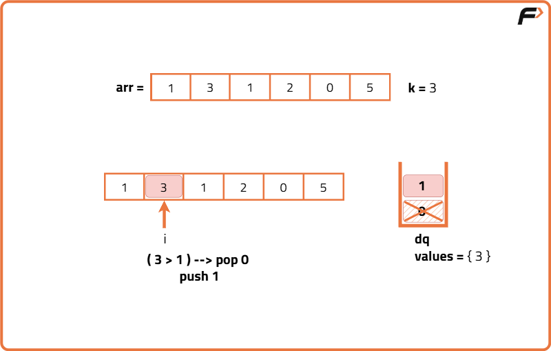
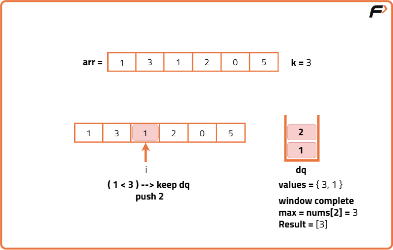
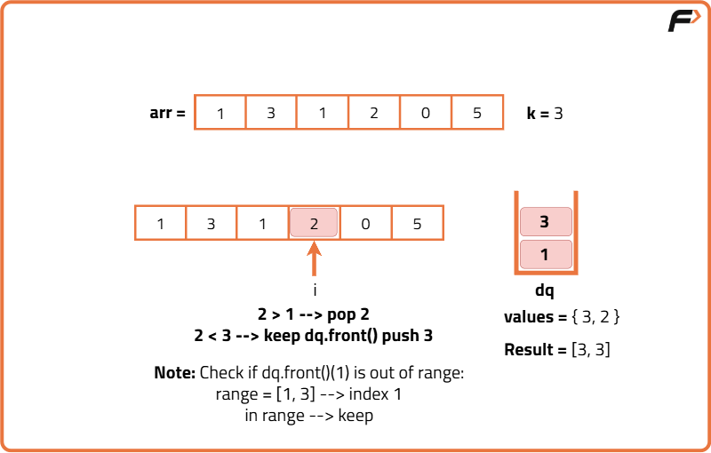
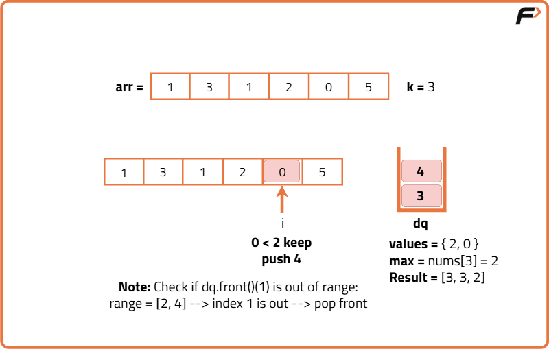
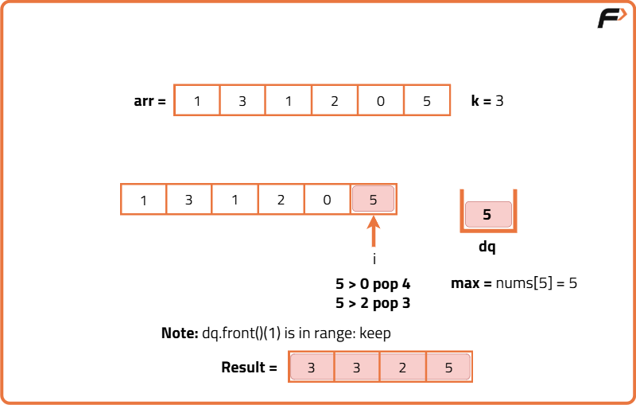

Sliding Window Maximum
Problem Statement: Given an array of integers arr, there is a sliding window of size k which is moving from the very left of the array to the very right. You can only see the k numbers in the window. Each time the sliding window moves right by one position. Return the max sliding window..
Examples
Input: arr = [4,0,-1,3,5,3,6,8], k = 3 Output: [4,3,5,5,6,8] Explanation: Window position Max ------------------------ ----- [4 0 -1] 3 5 3 6 8 4 4 [0 -1 3] 5 3 6 8 3 4 0 [-1 3 5] 3 6 8 5 4 0 -1 [3 5 3] 6 8 5 4 0 -1 3 [5 3 6] 8 6 4 0 -1 3 5 [3 6 8] 8 For each window of size k=3, we find the maximum element in the window and add it to our output array.
Input: arr= [20,25], k = 2 Output: [25] Explanation: There’s just one window is size 2 that is possible and the maximum of the two elements is our answer.
Disclaimer: Here is the practice link to help you assess your knowledge better. It's highly recommend trying to solve it before looking at the solution.
Brute Force Approach
Algorithm
- Loop through the array from index 0 to (length - window size)
- For each iteration, extract the subarray of window size
- Scan through that subarray to find the maximum element
- Store the maximum in the result array
- After the loop ends, return the result array




Code
#include <bits/stdc++.h>
using namespace std;
class Solution {
public:
// Function to return max of each sliding window of size k
vector<int> maxSlidingWindow(vector<int>& nums, int k) {
// Result vector to store maximum of each window
vector<int> result;
// Loop through the array till the window can slide
for (int i = 0; i <= nums.size() - k; i++) {
// Initialize max element as the first element of the window
int maxVal = nums[i];
// Traverse through the current window of size k
for (int j = i; j < i + k; j++) {
// Update maxVal if a larger value is found
maxVal = max(maxVal, nums[j]);
}
// Append the max of this window to the result
result.push_back(maxVal);
}
// Return the final result
return result;
}
};
// Driver code
int main() {
Solution obj;
vector<int> arr = {4, 0, -1, 3, 5, 3, 6, 8};
int k = 3;
vector<int> ans = obj.maxSlidingWindow(arr, k);
// Print the result
for (int num : ans) {
cout << num << " ";
}
return 0;
}
Complexity Analysis
Time Complexity: O(n * k) Each of the (n - k + 1) windows is scanned completely to find its maximum. In worst-case, each window of size k requires O(k) operations.
Space Complexity: O(1) We are only using output list which does not count as extra space in space complexity analysis. No additional data structures used.
Optimal Approach
Algorithm
The real concern is only when the outgoing element was the maximum. To optimize, we use a double-ended queue (deque) to maintain elements in a way that always keeps track of the current maximum efficiently. When a new element enters, we push it to the back of the deque, but before that, we remove all smaller elements from the back since they're not useful anymore. Also, if the element at the front is outside the window's range, we remove it. This ensures that the element at the front of the deque always represents the maximum of the current window.
- Initialize an empty deque and a result list
- Loop through the array from start to end
- Remove front of deque if it's outside the current window
- Remove all elements smaller than the current one from the back of the deque
- Insert the current index at the back of the deque
- If the window has at least k elements, append the front element's value to the result
- Return the result list






Code
#include <bits/stdc++.h>
using namespace std;
class Solution {
public:
// Function to return the max of each sliding window of size k
vector<int> maxSlidingWindow(vector<int>& nums, int k) {
// Deque to store indices of useful elements in the current window
deque<int> dq;
// Result vector to store the maximums
vector<int> result;
// Loop through each element in the array
for (int i = 0; i < nums.size(); i++) {
// Remove elements from the front if they are out of this window's range
if (!dq.empty() && dq.front() <= i - k) {
dq.pop_front();
}
// Remove all elements from the back that are smaller than current element
while (!dq.empty() && nums[dq.back()] < nums[i]) {
dq.pop_back();
}
// Add the current index to the deque
dq.push_back(i);
// Once the first window is completed, add front element to result
if (i >= k - 1) {
result.push_back(nums[dq.front()]);
}
}
// Return the final result
return result;
}
};
// Driver code
int main() {
Solution obj;
vector<int> arr = {4, 0, -1, 3, 5, 3, 6, 8};
int k = 3;
vector<int> ans = obj.maxSlidingWindow(arr, k);
// Print the result
for (int num : ans) {
cout << num << " ";
}
return 0;
}
Complexity Analysis
Time Complexity: O(n) Each element is pushed and popped from the deque at most once, so overall traversal is linear.
Space Complexity: O(k) Deque stores at most k elements at any time, one for each index in the window.